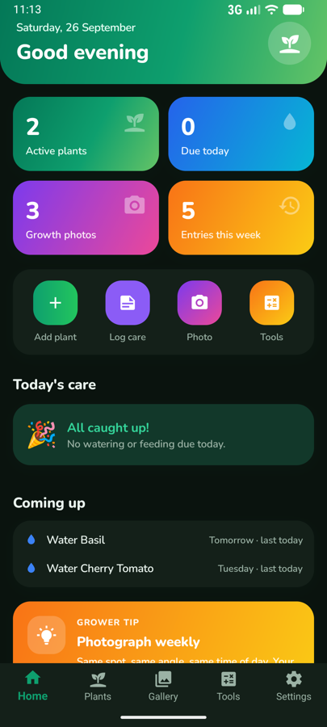
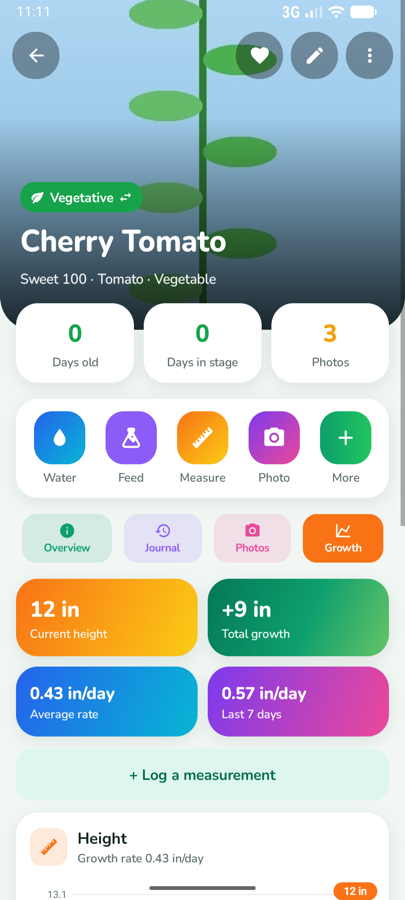
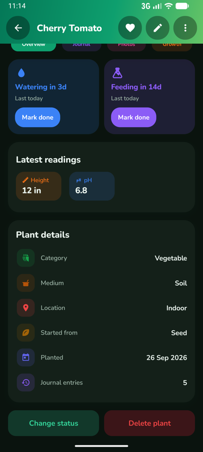
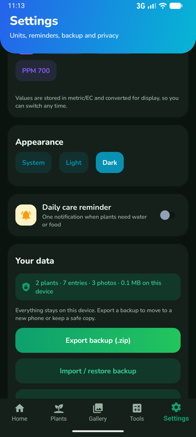

Every plant, organised
Search, filter and sort by category, growth stage, medium, location and status.
PlantHelper tracks watering, feeding, measurements, climate and growth photos for every plant you grow. No account, no ads, no tracking.


From a windowsill herb to a hydroponic tent, PlantHelper keeps the full history of each plant in one place.
Search, filter and sort by category, growth stage, medium, location and status.
Log watering, feeding, measurements, climate, pests, training, transplants, harvests, stage changes and notes.
Set watering and feeding intervals per plant, mark tasks done in one tap and get an optional daily reminder.
Take or pick photos, browse the gallery and compare before and after. Stored copies have location data removed.
See height over time, total growth, the average rate and the rate over the last 7 days.
VPD, daily light integral, PPM and EC conversion, a nutrient mixer and a unit converter.
The home dashboard works out which plants are due for water or food from the intervals you set and the entries you log.

Record height, width, node and leaf counts as you go. PlantHelper turns the readings into charts and growth rates for each plant.
Built-in calculators that follow your unit settings, so there is nothing to convert by hand.
Vapour pressure deficit from temperature and humidity, with the ideal range for the growth stage.
Daily light integral from PPFD and hours of light, checked against a recommended range.
Convert between EC, CF and the 500, 640 and 700 PPM scales.
How many millilitres of each product to add for the size of your tank.
Length, volume, temperature and weight.
Your fertilisers and additives with their label doses, ready to use in feed entries.
Results are guidance only. Always follow your product labels and watch how your plants respond.
PlantHelper has no server behind it. Your plants, journal and photos live in the app's private storage and nowhere else.

No. There is no sign-up and no login. Install the app and add your first plant.
Yes. The Android app does not request internet access at all, so everything works offline.
Open Settings and export a backup (.zip), then import it on the new phone. You can merge it with what is already there or replace everything with the backup.
Camera, only when you take a photo. Notifications, only if you turn the daily reminder on. Run at startup, to restore that reminder after the phone restarts. Photos from your gallery come through the system photo picker, so the app only sees the ones you choose.
Metric or imperial measurements, °C or °F, and nutrient strength as EC or PPM on the 500, 640 or 700 scale. Values are stored in metric and EC, so you can switch at any time.
Yes. The code is public on GitHub under the PolyForm Noncommercial License 1.0.0, which allows use, modification and sharing for noncommercial purposes.
PlantHelper's source is public, so every privacy statement on this page can be checked against what the app actually does.